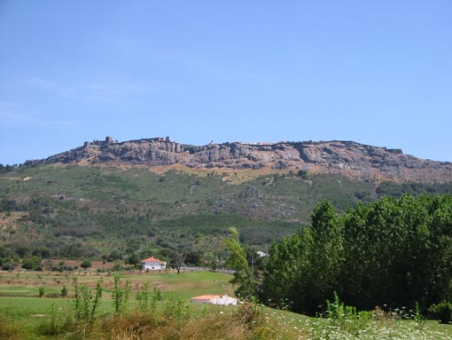
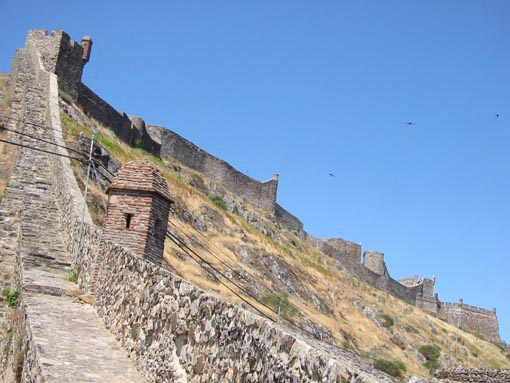
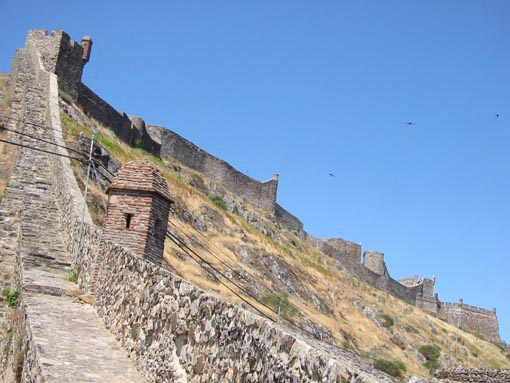

  
 
V naravnem parku Serra de Sao Mamede v pokrajini Alantejo
pribli¾no 12 kilometrov od ¹panske meje je mesto Marvao. Mesto le¾i
na hribu, skoraj 900 metrov nadmorske vi¹ine in je obdano z obzidjem iz
sedemnajstega stoletja. Na koncu mesteca je grad, ki ga je v trinajstem
stoletju dal zgraditi kralj Dinis. Zaradi strmega poboèja okoli obzidja je
grad skoraj nemogoèe zavzeti, v resnici se je to zgodilo samo enkrat leta
1833, ko so napadalci vstopili v obzidje skozi skrivna vrata.
Marvao je baje najbolje obiskati v sredini novembra, ko se tam odvija
tradicionalni vsakoletni festival kostanja (Festa da Castanha).